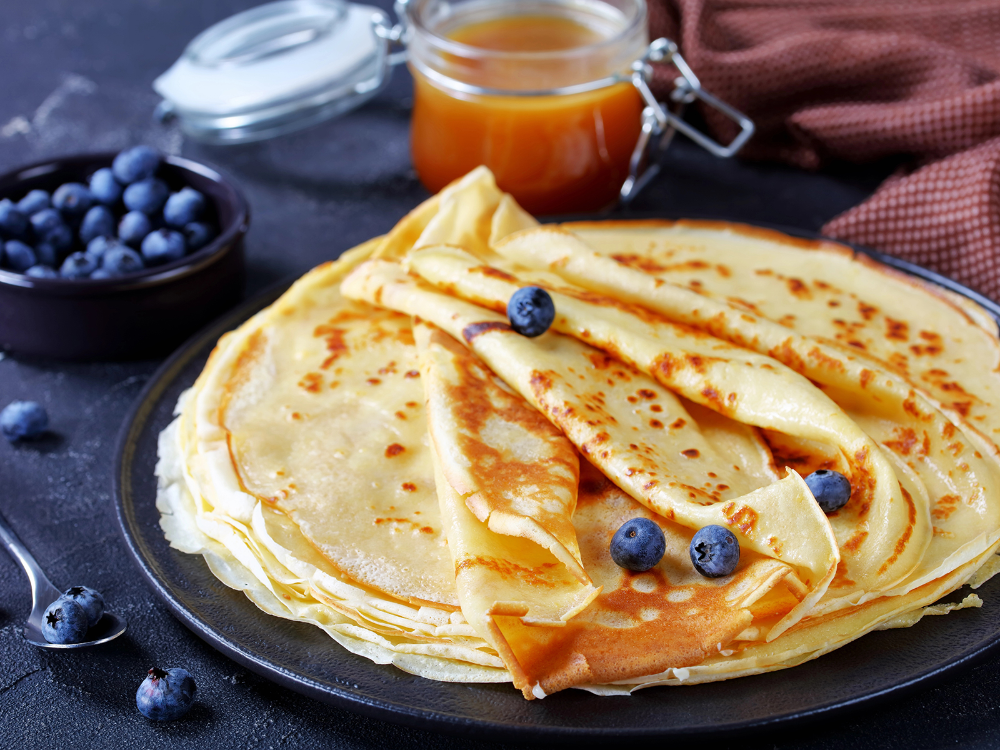

Die veganen Pfannkuchen werden Dank der Zugabe von Mineralwasser schön fluffig.
Der einfache Grundteig aus nur 5 Zutaten bleibt erhalten.

| Zutaten | Menge |
|---|---|
| Weizenmehl | 300g |
| Pflanzenmilch | 450ml |
| Salz | 1 Prise |
| Mineralwasser | 4 EL |
| Kurkuma | 1/2 TL |
Tolle Rezepte findest du hier:
Vegane Rezepte